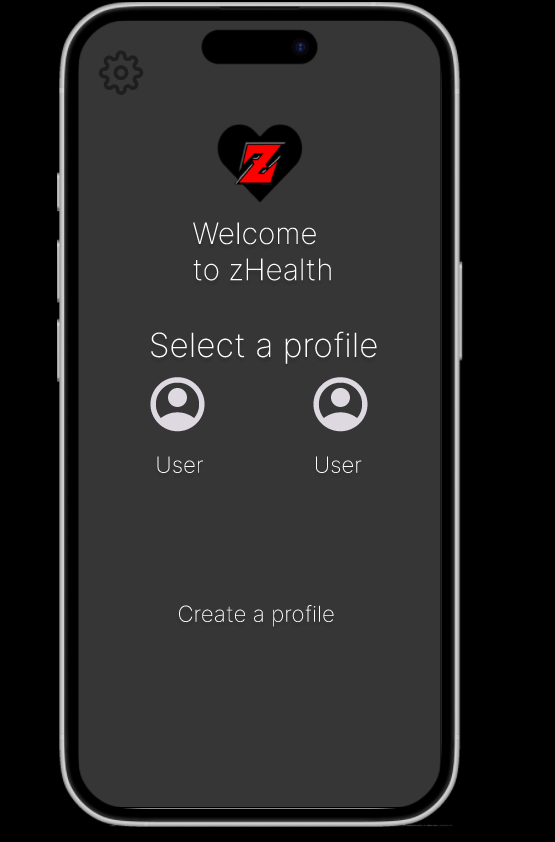

Introduction
This a case study on the UX/UI design of a health companion super app, zHealth.
The goal is to help people suffering from chronic diseases
track their health and fitness,
by offering a convenient, yet powerful application.
This app will help them manage medication, track vitals,
set reminders or schedules, and have real time communication with healthcare professionals.
Below is
the
research done on potential users, personas, and all the design stages of the app.
User Research
According to a survey, the number of health and fitness app users has increased by
27% in 2020,
with 45% of the users being between the ages of 18-29. [1]
The most common reasons for using these apps are to track physical activity,
monitor diet, and lose weight. The most popular health apps are MyFitnessPal, Fitbit, and Samsung
Health.
A study conducted by Paradis et al. found that 60% of patients aged 18-69 use health apps, with the most
common reasons being to track physical activity,
monitor diet, and lose weight. The most popular health apps are MyFitnessPal, Fitbit, and Samsung
Health. [2]
This particular project is quite relevant to me for many reasons. My 55 year-old father actually suffers from type 2 diabetes, and I have seen first hand how difficult it is to manage the disease. This is why I chose to interview him to get a better look into the point of view of a potential user. The second person I chose to interview was my neighbor, who is currently making use of a pacemaker to treat his heart failure. He is in in mid 70's, and suffers from Bradychardia.
Interview with a Diabetic
For context, my father is a cloud software architect, who had suffered from diabetes ever since he was in his early twenties.
"Q: Have you used a Health Application such as Apple Health, Samsung Health, or any other app before?
If you have, tell me what was the most convenient and inconvenient features about it."
"A: Yes. I have used Samsung Health and have also tried to use a FitBit to track my health.
The main issue with them is the clutter. I can't find what I need most of the time because the
important info
is buried God knows where."
"Q: What's the first thing you look for in terms of health metrics regarding your illness?
Say you open the app, what's your priority?"
"A: Well, first thing in the morning, I need my insulin. Then, I need to read my blood sugar
levels.
I'd like the first thing I see to be some kind of schedule or a checklist.
I don't really bother looking at anything else until I've done those two things."
"Q: Are you a forgetful person when it comes to daily tasks like exercising, or taking medication...?
If so, what would you look for in an application to help mitigate this? "
"A: Yes. The older I get, the more I neglect certain things. Notifications and alerts to my phone
don't help.
I get hundreds of notifications a day, so I'm likely to ignore those.
If I'm going to get an alert, it'd have to be inside the app. "
"Q: How often do you consult healthcare professionals for medical advice? "
"A: Every few months. But I usually get information on YouTube or from online health blogs."
"Q: For the next possible features, answer with either "Very Useful", "Useful", "Occasionally Useful",
"Not Useful".
The ability to have a live chat with a healthcare professional"
"A: Very Useful."
"Q: — an AI-powered chat-bot that feeds information directly from the internet?"
"A: Occasionally Useful, but the info would have to be very credible. I'd rather speak to a real expert."
"Q: — A personalized training routine based on your sugar levels?"
"A: Not Useful. I often need help with my diet, not my exercise routine."
"Q: — Based on your last response, would a feature that allows you to track your diet
and suggest meals based on your blood sugar levels be useful?"
"A: Yes, Very Useful. If I can have a breakfast-to-supper itineray, that'd save me a lot of time."
Interview with a 70-Year-Old Man with Heart Failure Issues
For context, my neighbor has worked in construction nearly his whole life. He has little experience with technology.
"Q: Have you used a Health Application such as Apple Health, Samsung Health, or any other app before?
If you have, tell me what was the most convenient and inconvenient features about it."
"A: Yes, I’ve tried using Apple Health before, mostly because my kids set it up for me.
I found it difficult to navigate. There’s just too much information all over the place, and it feels
cluttered.
I struggled to find my heart rate and medication reminders easily.
Also, the text is too small sometimes, and my eyesight isn’t as good as it used to be."
"Q: What's the first thing you look for in terms of health metrics regarding your heart condition?
Say you open the app, what's your priority?"
"A: I need to check my blood pressure and heart rate first thing in the morning.
After that, I look at my medication schedule to make sure I take everything on time.
Sometimes I also want to see my weight because my doctor told me to watch for sudden changes.
If all of that could be on one screen, it’d be much easier."
"Q: Are you a forgetful person when it comes to daily tasks like exercising or taking medication?
If so, what would you look for in an application to help mitigate this?"
"A: Yes, I forget quite often. Especially when my day gets busy or I’m distracted.
I'm bad with phones, and sometimes I just swipe them away without thinking.
If the app could remind me as soon as I open it, that would be better. Maybe a checklist I can’t
ignore."
"Q: How often do you consult healthcare professionals for medical advice?"
"A: Every two months or so, mostly for check-ups and medication adjustments. But I do have questions
in between visits.
Sometimes I call my doctor, but I don’t want to bother him too much, so I just look things up
online."
"Q: For the next possible features, answer with either "Very Useful", "Useful", "Occasionally Useful",
or "Not Useful."
— The ability to have a live chat with a healthcare professional "
"A: Very Useful. It would be reassuring to get advice without having to go to the clinic. "
"— An AI-powered chat-bot that feeds information directly from the internet?"
"A: I don't know what that is. Not useful."
"— A personalized exercise routine based on your heart rate and blood pressure? "
"A: Useful, but it would need to be safe. My doctor told me to avoid certain exercises, so it should take that into account."
"— A feature that allows you to track your diet and suggests heart-healthy meals?"
"A: Very Useful. I have dietary restrictions because of my heart, and it’s hard to keep track of sodium and cholesterol."
"— Daily reminders for medication and hydration?"
"A: Very Useful. Especially if it’s on the main screen, so I don’t forget."
"— A weight tracking feature that alerts you if there’s a sudden increase?"
"A: Very Useful. My doctor warned me about sudden weight gain due to fluid retention, so this would be very helpful."
"Q: Do you have any other concerns or needs you’d like a health app to address?"
"A: It would be great if it were easy to read and simple to use. I don’t need a lot of fancy features. Just the basics."
User Personas
Based off the info done through my research and interview process, here are the user personas for this application.
Mary Thompson
Age: 65
Occupation: Retired Teacher
Health Condition: Type 2 Diabetes, Hypertension
Tech Proficiency: Moderate – Uses smartphone for basic tasks
Goals:
- Maintain consistent medication routine
- Track blood sugar and blood pressure levels
- Avoid complications related to diabetes and hypertension
- Communicate easily with her doctor
Motivations:
- Staying healthy to spend time with grandchildren
- Reducing anxiety about forgetting medication
- Gaining a better understanding of her health trends
Pain Points:
- Difficulty remembering medication times
- Frustration with manually logging health data
- Limited mobility for frequent clinic visits
How they would use the app
- Set reminders for her daily medication and insulin doses
- Log blood sugar and blood pressure readings
- Share health reports directly with her healthcare provider before virtual appointments
- Receive alerts for upcoming doctor appointments and medication refills
Kate Kateson
Age: 28
Occupation: Full-time Caregiver (for her mother)
Health Condition: Alzheimer’s Disease
Tech Proficiency: High – Familiar with social media and utility apps
Goals:
- Manage her mother’s complex medication schedule
- Keep track of medical appointments and notes from doctors
- Communicate with multiple healthcare providers
Motivations:
- Ensure her mother’s safety and health stability
- Reduce caregiver stress by organizing all health information in one place
- Feel more confident and in control of her caregiving responsibilities
Pain Points:
- Overwhelmed by the number of medications and varying schedules
- Difficulty coordinating care among different specialists
- Emotional strain of caregiving and fear of missing important health updates
How they would use the app
- Set detailed reminders for her mother’s medications, including dose instructions
- Track symptoms and behavioral changes to discuss with doctors
- Access emergency contact information and health history quickly
Rich Evans
Age: 66
Occupation: Financial Crime Analyst
Health Condition: Post-Heart Attack Recovery
Tech Proficiency: High (Uses wearables and multiple health apps)
Goals:
- Monitor physical activity safely.
- Track recovery progress with health metrics like heart rate variability.
- Access educational resources about heart-healthy exercises.
Motivations:
- Regain strength and confidence after his heart attack.
- Avoid future cardiac events by staying informed and proactive.
Pain Points:
- Finds general fitness apps unhelpful for heart-specific recovery.
- Feels uncertain about which activities are safe.
- Wants to avoid information overload but needs credible resources.
How they would use the app
- Would use personalized exercise plans that adapt to his heart rate.
- Needs educational content on safe post-heart attack recovery.
- Would track progress through detailed health reports to discuss with his cardiologist.
User Journey Map
I created a Journey Map for the user Mary Thompson
Below is a potential use-flow for her type of user.
Storyboard
The persona Rich Evans was used for this Storyboard:
User Flow Diagram
The user flow diagram would be similar to this:
Sketches
Using my flow chart and user journey maps as reference, these are the sketches I came up with:
Wireframes
The wireframes I came up with are shown below. They are meant to be very simple,
and easy to navigate.
Based on my research and interviews, I wanted to make the interface as
simple as possible.
Visual Design
Color Palette
The color palette I chose is meant to be as simplistic as possible.
I will be completely transparent, I am terrible with colors, so I used a 3 main colors:
Black, White, and Red/Orange.
Style and Personality
Part of my research was seeing how other apps used color and style for the ebst user experience. I wanted the font sizes to be
as readable as possible, opting for Google's `Inter` [3] at an extra-bold setting, with a minimum of 20px.
The demographic for health apps is usually older, so I wanted to take into account poor vision. I also tried to use as many icons as possible,
since it makes the application more universal, regardless of the user.
Prototype
Static Prototype Images
Below are the static images of the prototype.
|  | ||
Interactive Prototype
Conclusion
What I learned
Throughout this project, I learned the importance of user-centered design and how crucial it is to understand the needs and pain points of the target audience.
Conducting interviews and creating user personas helped me empathize with the users and design a solution that addresses their specific requirements.
I also gained experience in creating user journey maps, wireframes, and prototypes, which are essential tools in the UX/UI design process.
These tools helped me visualize the user flow and ensure that the app is intuitive and easy to navigate.
Looking back on personas
Reflecting on the personas, I realized that each user has unique needs and preferences.
For example, Mary Thompson values medication reminders and easy communication with her doctor,
while Kate Kateson needs a way to manage her mother's complex medication schedule.
Rich Evans, on the other hand, focuses on monitoring his physical activity and recovery progress.
By considering these diverse needs, I was able to design an app that caters to a wide range of users,
ensuring that it is both functional and user-friendly.
This project has reinforced the importance of user research and the impact it has on creating effective and meaningful designs.